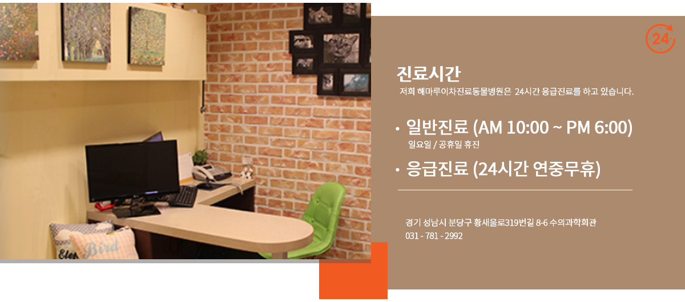

진료예약/상담
예약안내
진료예약
응급진료안내
온라인상담
진료안내
진료시간
진료과목
의료진
의료진소개
병원소개
병원소개
구조 및 시설
의료기기소개
비지팅신청안내
커뮤니티
병원행사
공지사항
FAQ
오시는길
오시는길
HAEMARU
이차진료동물병원
해마루솔루션
소동물임상의학연구소
진료예약/상담
예약안내
진료예약
응급진료안내
온라인상담
진료안내
진료시간
진료과목
의료진
의료진 소개
병원소개
병원소개
구조 및 시설
의료기기소개
비지팅 신청안내
커뮤니티
병원행사
공지사항
FAQ
오시는길
오시는길
HAEMARU
이차진료동물병원
해마루솔루션
소동물임상의학연구소
로그인
검색
진료시간
진료과목
진료 시간
해마루 이차진료 동물병원의 진료시간을 안내해드립니다.
해마루 동물병원은 2차 진료기관으로 지역병원에서 의뢰를 받아 진료를 실시하고 있으며
내과, 외과, 영상의학과, 중환자·응급의학과등 각 분야별로 담당의사가 있어 전문적인 치료가 가능합니다.
전문적인 치료를 위해 지역병원에서의
진료의뢰서
와
사전 예약
이 반드시 필요합니다.
( 환자의 주 질환과 상태, 해당 진료과의 예약 사정등에 따라 다를 수 있으나 최소 3 ~ 4일 전에 예약 하여 주시기 바랍니다 )
